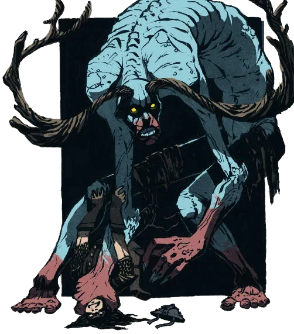

Eine Reihe von Klippenpfaden und Brücken, die vor langer Zeit verfallen sind. In der Mitte liegt eine dreifache Wegkreuzung, die dem Ort seinen Namen gibt. Reisende markieren ihren Weg mit Federn, die sie mit dem Kiel voran in Felsspalten stecken.
Domains: Desolate, Wild
Stress: W6
7 / 10
Ereignisse:
1Steinschlag
2Angriff von Harpyien
3Gefährliche Kletterpartie
4Ausgelassene Swanfall-Kultisten auf Pilgerfahrt von Highrise
Verbindung: Säubert die felsigen Höhlen vom Schlächter (S. 180), der den Pass bedroht.
Der LeichengottS. 137Tiefe 1
Haven, Religion · Standard-Stress W4
Haunts:
·Galen Guides-the-Pulse und Doktor Haverick, eifrige Chirurgen (W10, Blood)
·Madb, triefäugiger Hierophant des Rippenkäfig-Markts (W8, Supplies)
Die Delver
Bei 7 oder weniger: Stress und Fallout abhandeln
W12 > StressKein Fallout.≤ Stress, 6 oder wenigerLeichter Fallout; aller Stress der betroffenen Resistenz wird gelöscht.≤ Stress, 7 oder mehrSchwerer Fallout; aller Stress wird gelöscht.
Ausrüstung: Zwei altmodische Pistolen Kill W8, Ranged, Loud, One-Shot
Ressource: Fläschchen verfluchter Tinte W6 Occult
kein Fallout
Gegner

SchlächterS. 180
RiskantSchutz 3
8 / 10
Motivation: Fleisch (wenn möglich lebendes) für seine Höhle holen.
Ressourcen: Schlächter-Eingeweide (W6, begehrt zum Anfertigen von Schutzsiegeln); Geweih (W6–W10, je nach Zahl der Enden); Hinterlassenschaften der Opfer, wenn ihr ihre Höhle findet und mit dem Gestank fertigwerdet (W8).
Ausrüstung: Albtraumklauen (W10)
Domains: Wild, Warren, Cursed
Fallout: Verschleppt. [Blood, schwer] Du bist verletzt, kannst dich nicht richtig bewegen und wirst durch die Dunkelheit geschleift, um in die Fleischwand gepresst zu werden, die der Schlächter als stummen, schwachsinnigen Gott verehrt.
▸ Text, Namen, Beschreibung
HarpyienS. 189Riskant · Resistenz 4 · Schutz 0
1Tab-Leiste nur fürs laufende Spiel. Aktiver Tab = rote Namensplatte wie im Buch (Landmarken-/Gegnernamen), darunter die rote Linie. Stift = Notizen.
3Resistenz des Delves als Kästchen-Leiste (Klick = Stress abziehen). Ereignisse anklickbar → grau.
4Regel aus „Regeln in Kürze“ (S. 8) als schwarzer Kasten – genau so steht sie im Buch.
5Jeder Delver als Mini-Bogen: dieselben Kästchen wie auf dem Charakterbogen (10 Stress, 5 Schutz je Resistenz), Summe oben rechts für die W12-Probe, Fallout als schwarze Etiketten.
6Gegner als Statblock wie im Buch: rote Linie links, rosa Zebra-Zeilen, Bild klein in der Karte, Fallout im schwarzen Kasten. Weitere Gegner zugeklappt.